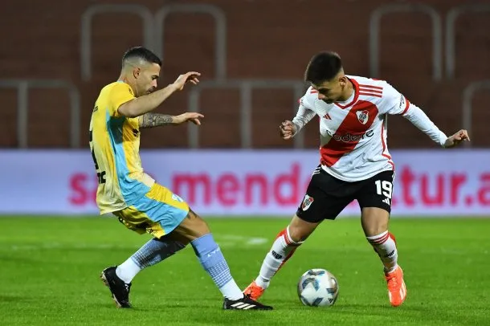
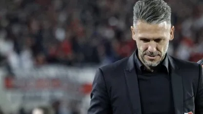
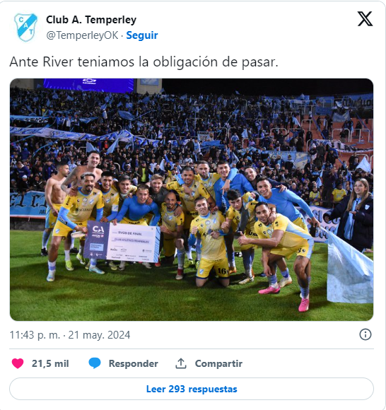

River ELIMINADO de la Copa Argentina

El millonario no pudo contra un Gasolero imbatible
El conjunto de Daniel Demichelis empató 1 a 1 en la definición de los 32avos de la Copa Argentina.
En un partido muy reñido en donde el primer gol cayó a manos de Ezequiel Barco (51´), ya se pensaba que River iba a avanzar de fase, pero un batacazo de Fernando Martinez (90´+2) en el tiempo agregado dejó a los millonarios helados.
En los penales no hubo sorpresa por parte de Franco Armani, y de los 6 penales pateados, 5 fueron gol y uno se fue por arriba del travesaño. Se duda la continuidad del ex arquero de Nacional de Colombia ya que no es fundamental en cancha y en penales atajó tan solo 9 de 65 penales pateados en su carrera como arquero de River, dejando así sus números bastante negativos, con 27 penales atajados de los 162 que le fueron ejecutados (en total un 16,6%).
Demichelis de ser silbado, a ser aplaudido, a ser silbado de vuelta. Esto pone en duda la continuidad del técnico argentino que ya está clasificado a los 8vos de final de la Copa Libertadores y viene primero en la tabla general.
El conjunto Gasolero no se quedó atrás y ya le hizo una chicana a las gallinas.
 Volver a inicio